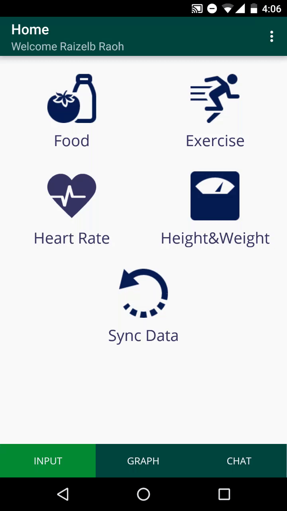
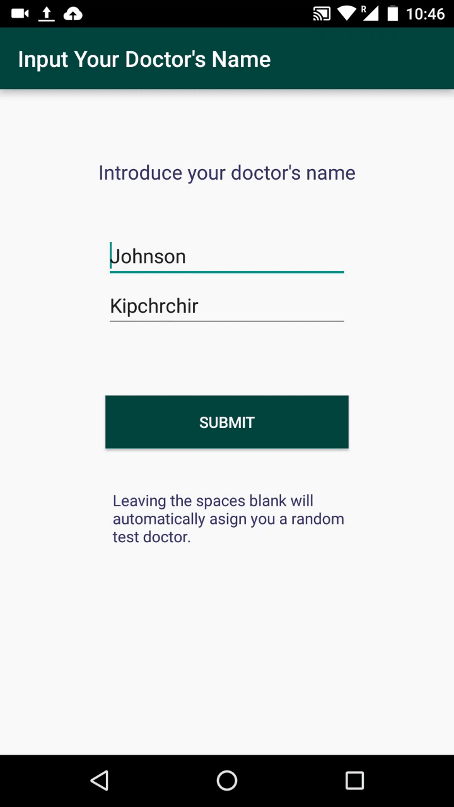

All your data in one place! Everything is one click away!
OpenMRS-Hypertension was created with the aim of collecting all the health and fitness related data in one place. It allows manual input of nutrition/activity/heart rate logs as well as easy synchronization with Android's GoogleFit and FitBitHR smartwatch.

Your doctor is now one click away!
The Android client provides the user with the opportunity of chatting with their doctor any time of day, whether it's asking a health related question or requesting for an appointment. Was going to the doctor a problem because of your busy schedule? You don't have an excuse anymore with our app!